NOSM University Rebrand
Rebuilding the brand guide for Canada's first independent medical university.
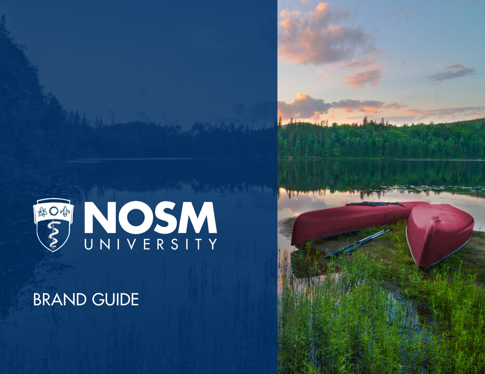
The brand guide I inherited said NOSM was Canada's first medical university. It isn't. That was page one. Over three drafts I took the guide from v1.0 to v1.5: rewrote the logo sections, built a colour system with names from Northern Ontario, wrote the accessibility standards, and set policy for a logo that exists in three languages.
3
logo languages
28
guide pages
300+
fixes and rewrites
v1.5
from v1.0
Rebuilt page by page
Most of what you're looking at didn't exist in v1.0. The colour architecture, the accessibility standards, the language policy: written, designed, and argued into the document one review meeting at a time. The 300+ tracked recommendations stayed in the working files where they belong. The spreads are what shipped.
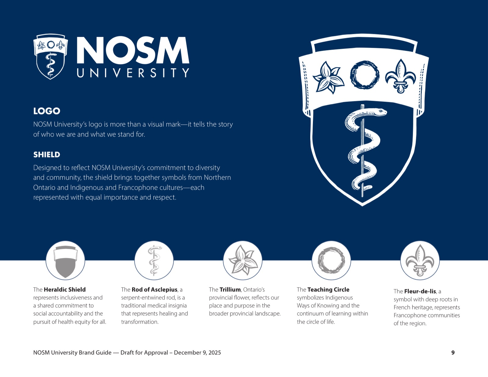
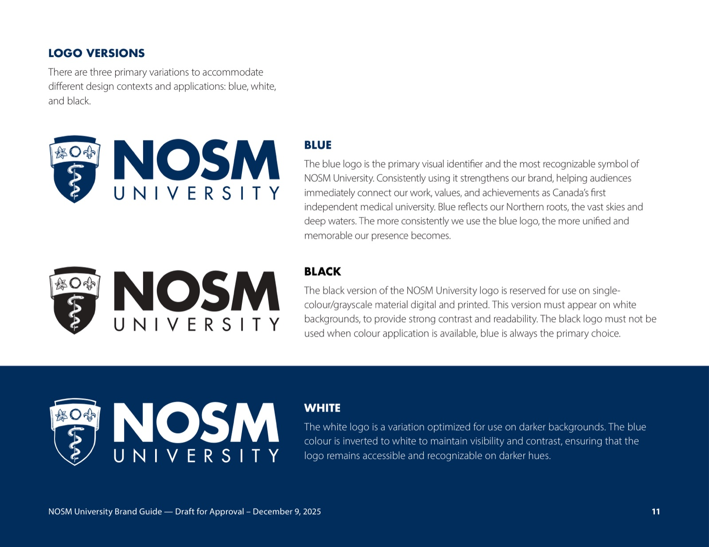
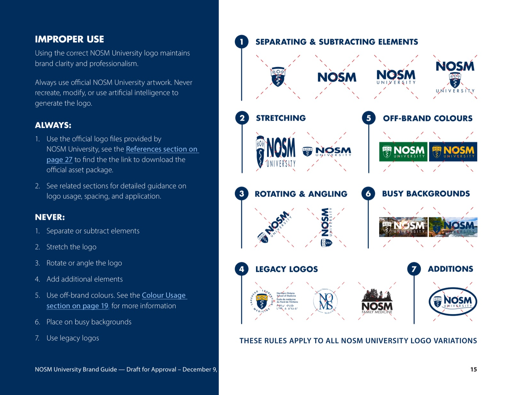
Named after home
Every colour got a name from Northern Ontario: Northern Navy, Superior Grey, Sunset Gold, Aurora Pink. Under the names sits an audience system. Presidential and donor work stays in core colours. Internal teams get secondary accents. External campaigns keep them under ten percent.
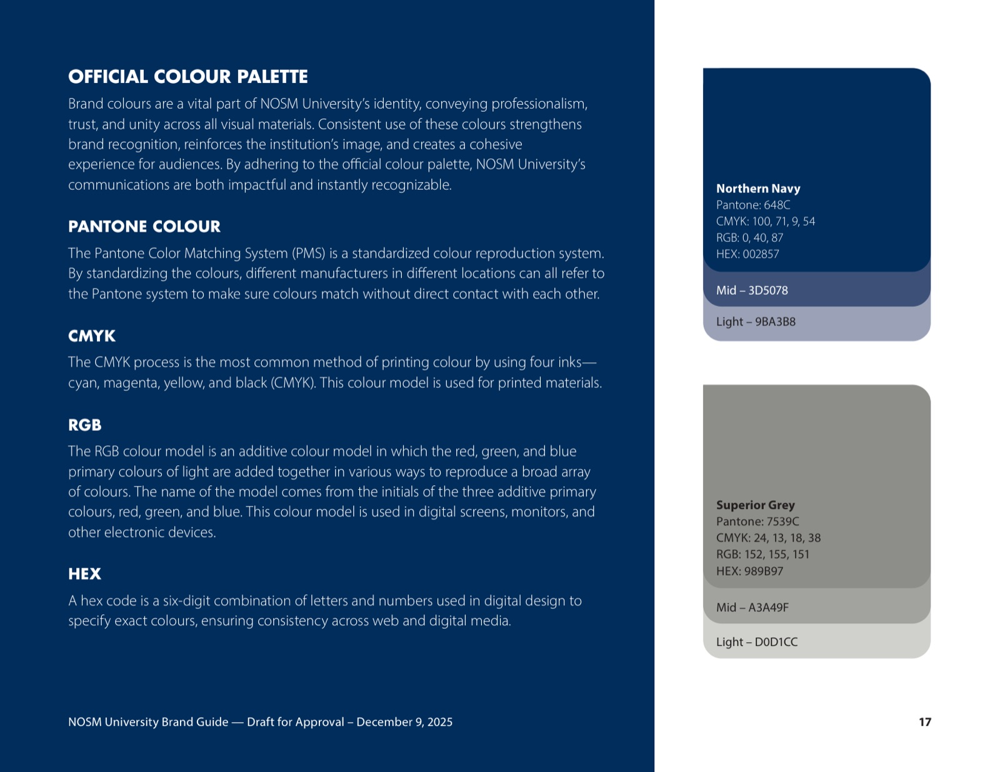
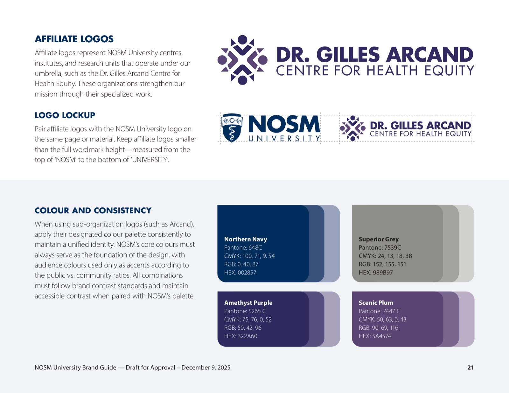
One logo, three languages
NOSM's logo exists in English, French, and Oji-Cree, and nobody had written down when to use which. Accessibility law says one thing, representation says another, budgets say a third. I wrote the policy that settles it: a three-step framework anyone at the university can defend, in written and flowchart form.
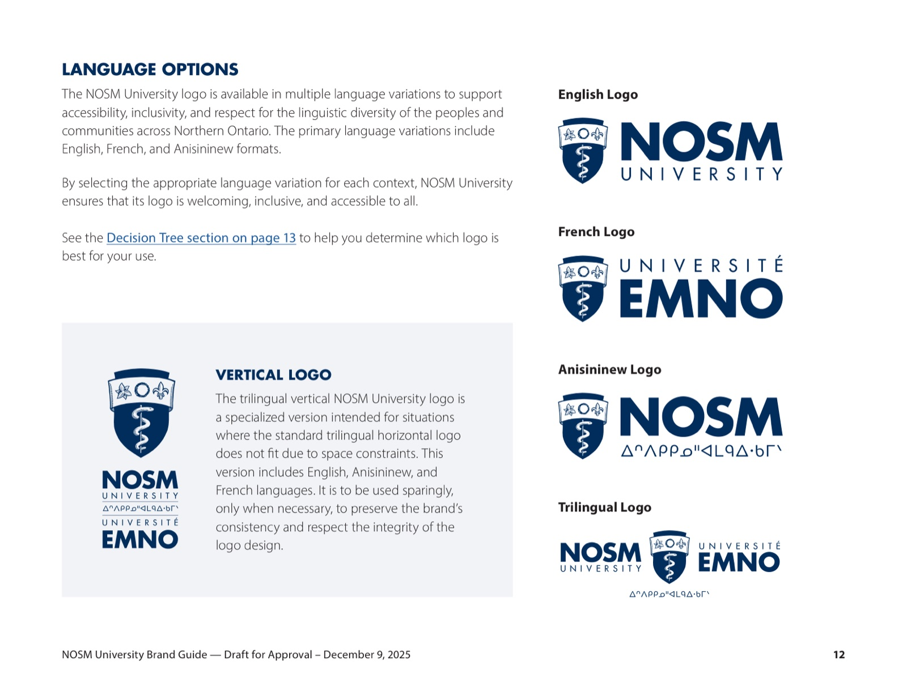
Merch that follows the rules
The university store was printing logos wrong, so I showed them right. Apparel mockups on real product photography, every garment in all three languages, handed off as vendor-ready files.
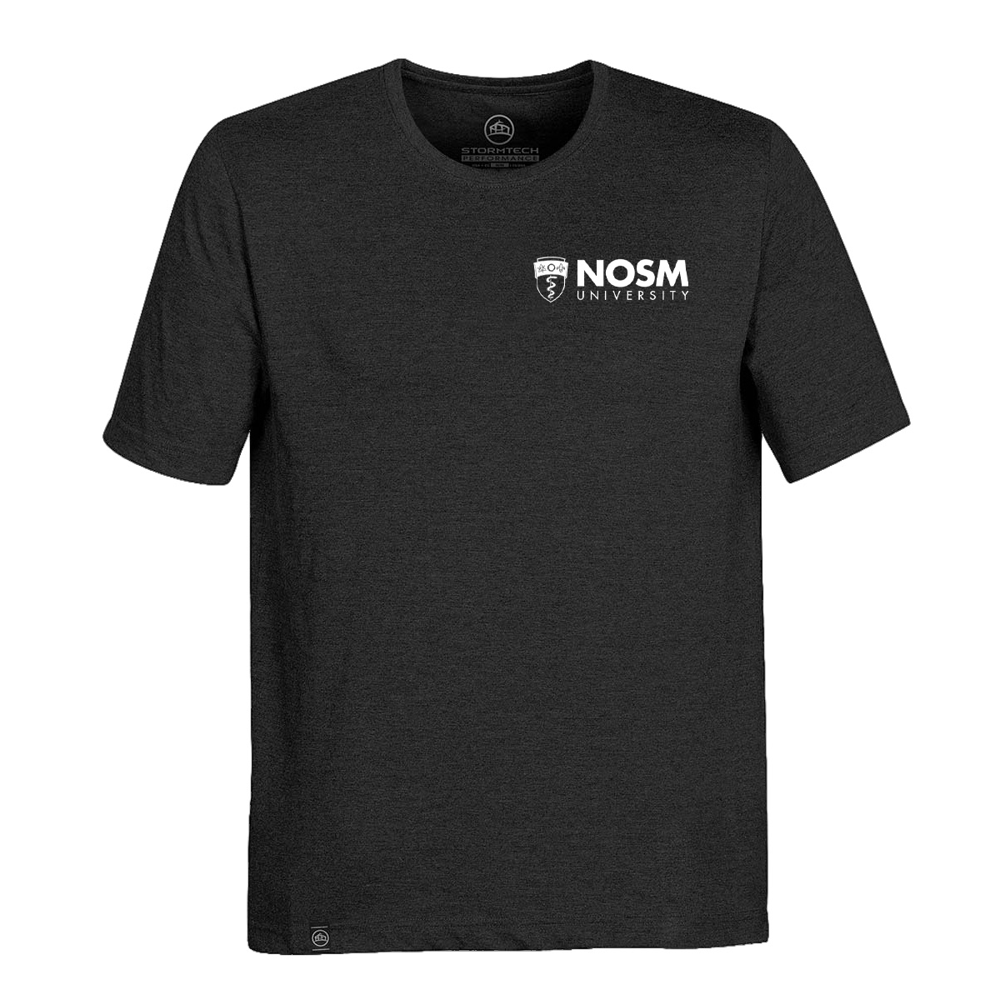
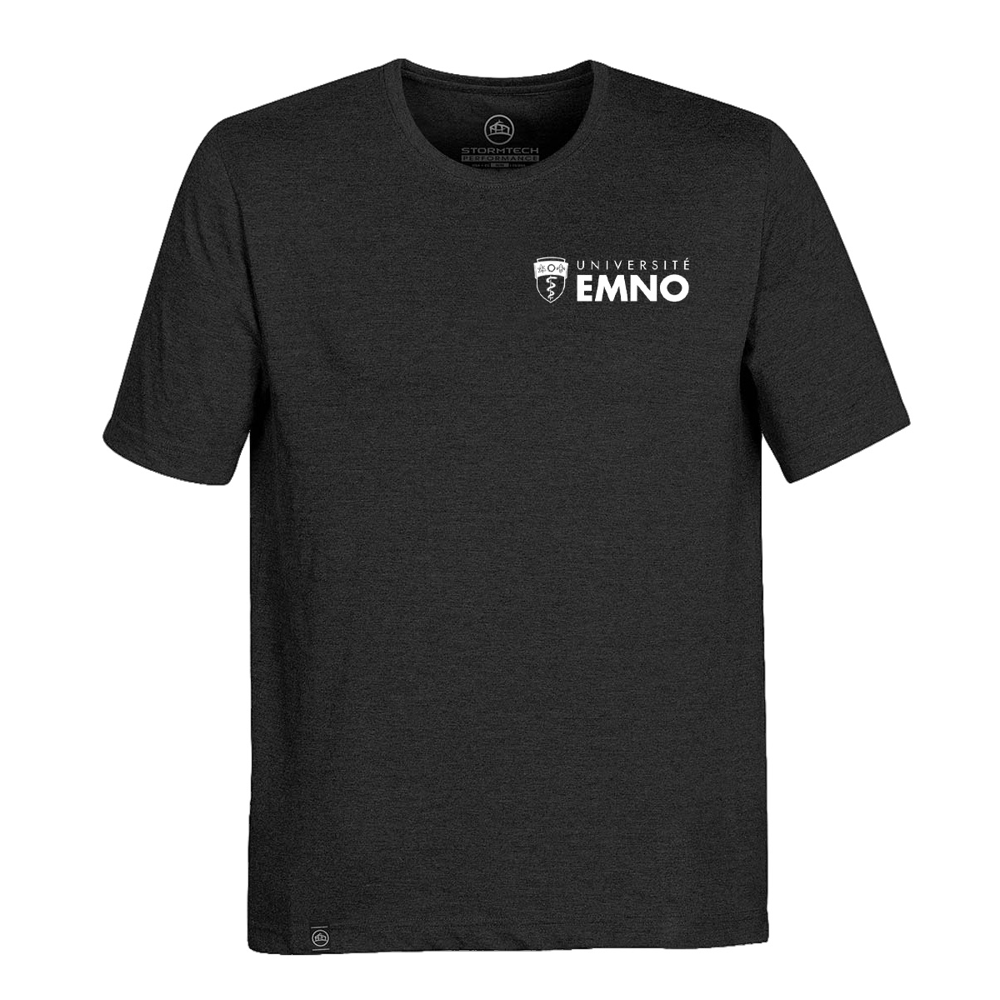
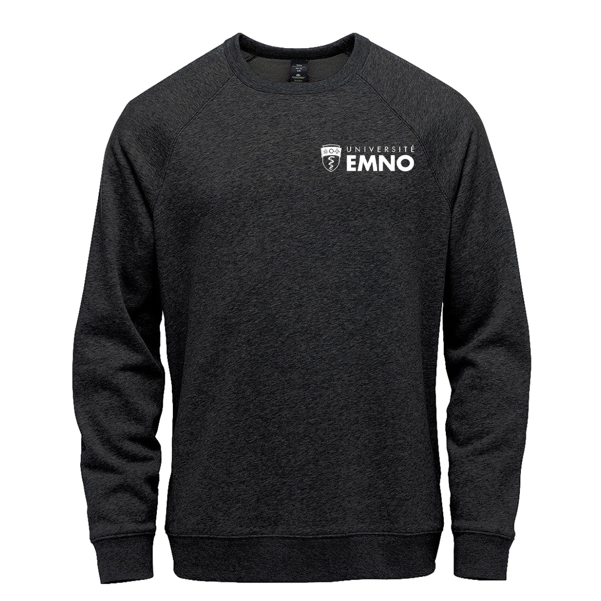
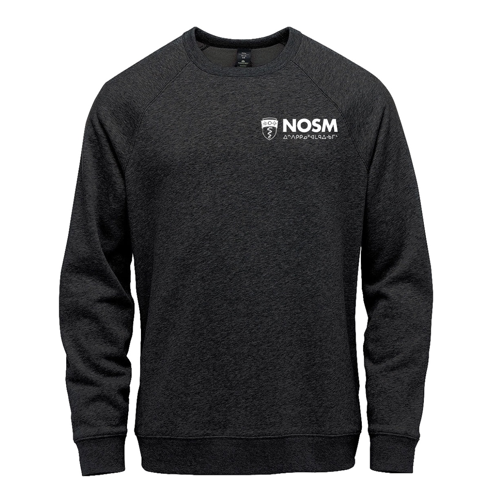
TL;DR
- Brand guide v1.5 is the university's working standard.
- A logo policy that settles the three-language question before it becomes an argument.
- 300+ fixes, rewrites, and new sections across three review drafts, each one taken through the AVP.
Want a designer who reads the accessibility law before picking the font? Let's talk.
Get in touch